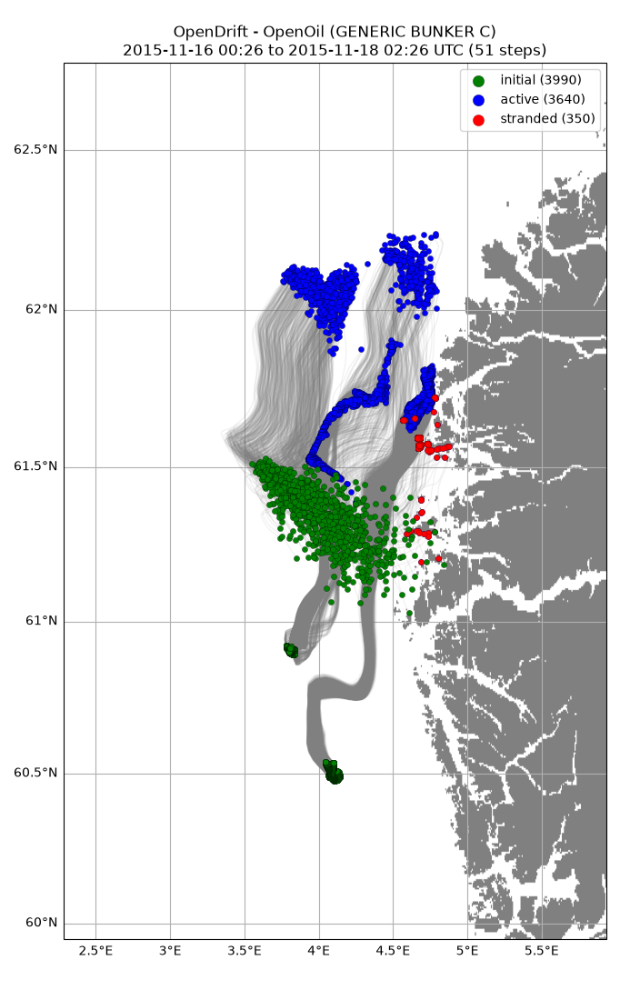
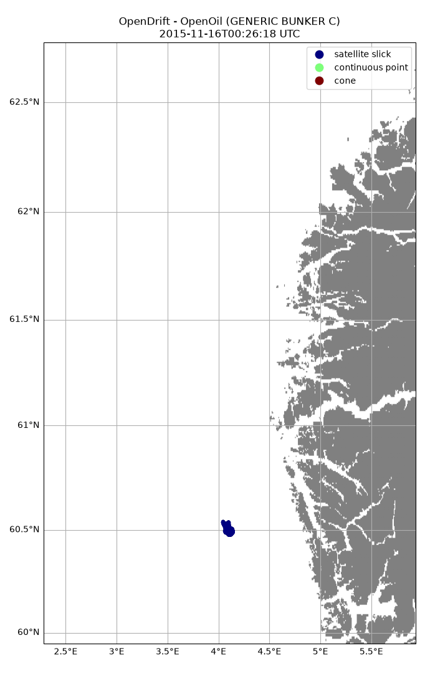

Note
Go to the end to download the full example code.
Multi seed
from datetime import datetime
from opendrift import test_data_folder as tdf
from opendrift.readers import reader_netCDF_CF_generic
from opendrift.models.openoil import OpenOil
o = OpenOil(loglevel=20) # Set loglevel to 0 for debug information
# Arome
reader_arome = reader_netCDF_CF_generic.Reader(tdf +
'16Nov2015_NorKyst_z_surface/arome_subset_16Nov2015.nc')
# Norkyst
reader_norkyst = reader_netCDF_CF_generic.Reader(tdf +
'16Nov2015_NorKyst_z_surface/norkyst800_subset_16Nov2015.nc')
o.add_reader([reader_norkyst, reader_arome])
o.set_config('processes:evaporation', False)
o.set_config('drift:vertical_mixing', False)
o.set_config('environment:fallback:x_sea_water_velocity', 0)
o.set_config('environment:fallback:y_sea_water_velocity', 0)
12:24:39 INFO opendrift:568: OpenDriftSimulation initialised (version 1.14.9 / v1.14.9-49-gf94e1e5)
12:24:39 INFO opendrift.readers:67: Opening file with xr.open_dataset
12:24:39 INFO opendrift.readers.reader_netCDF_CF_generic:340: Detected dimensions: {'time': 'time', 'x': 'x', 'y': 'y'}
12:24:39 INFO opendrift.readers:67: Opening file with xr.open_dataset
12:24:39 INFO opendrift.readers.reader_netCDF_CF_generic:340: Detected dimensions: {'x': 'X', 'y': 'Y', 'z': 'depth', 'time': 'time'}
Seed oil particles within contour detected from satellite
o.seed_from_gml(tdf + 'radarsat_oil_satellite_observation/RS2_20151116_002619_0127_SCNB_HH_SGF_433012_9730_12182143_Oil.gml',
num_elements=2000, origin_marker=0)
12:24:39 INFO opendrift.models.openoil.openoil:1720: Oil type not specified, using default: GENERIC BUNKER C
12:24:39 INFO opendrift.models.openoil.adios.dirjs:86: Querying ADIOS database for oil: GENERIC BUNKER C
12:24:39 INFO opendrift.models.openoil.openoil:1731: Using density 988.1 and viscosity 0.021692333877975332 of oiltype GENERIC BUNKER C
12:24:39 INFO opendrift.models.basemodel.environment:203: Adding a global landmask from GSHHG
12:24:44 INFO opendrift.models.basemodel.environment:227: Fallback values will be used for the following variables which have no readers:
12:24:44 INFO opendrift.models.basemodel.environment:230: sea_surface_height: 0.000000
12:24:44 INFO opendrift.models.basemodel.environment:230: upward_sea_water_velocity: 0.000000
12:24:44 INFO opendrift.models.basemodel.environment:230: sea_surface_wave_significant_height: 0.000000
12:24:44 INFO opendrift.models.basemodel.environment:230: sea_surface_wave_stokes_drift_x_velocity: 0.000000
12:24:44 INFO opendrift.models.basemodel.environment:230: sea_surface_wave_stokes_drift_y_velocity: 0.000000
12:24:44 INFO opendrift.models.basemodel.environment:230: sea_surface_wave_period_at_variance_spectral_density_maximum: 0.000000
12:24:44 INFO opendrift.models.basemodel.environment:230: sea_surface_wave_mean_period_from_variance_spectral_density_second_frequency_moment: 0.000000
12:24:44 INFO opendrift.models.basemodel.environment:230: sea_ice_area_fraction: 0.000000
12:24:44 INFO opendrift.models.basemodel.environment:230: sea_ice_x_velocity: 0.000000
12:24:44 INFO opendrift.models.basemodel.environment:230: sea_ice_y_velocity: 0.000000
12:24:44 INFO opendrift.models.basemodel.environment:230: sea_water_temperature: 10.000000
12:24:44 INFO opendrift.models.basemodel.environment:230: sea_water_salinity: 34.000000
12:24:44 INFO opendrift.models.basemodel.environment:230: sea_floor_depth_below_sea_level: 10000.000000
12:24:44 INFO opendrift.models.basemodel.environment:230: horizontal_diffusivity: 0.000000
12:24:44 INFO opendrift.models.basemodel.environment:230: ocean_vertical_diffusivity: 0.020000
12:24:44 INFO opendrift.models.basemodel.environment:230: ocean_mixed_layer_thickness: 50.000000
Additional continous point release, lasting 24 hours
o.seed_elements(3.8, 60.9, radius=0, number=1000, origin_marker=1,
time=[datetime(2015,11,16,8), datetime(2015,11,17,8)])
12:24:44 INFO opendrift.models.openoil.openoil:1724: Oil type already set as GENERIC BUNKER C
12:24:44 INFO opendrift.models.openoil.openoil:1731: Using density 988.1 and viscosity 0.021692333877975332 of oiltype GENERIC BUNKER C
Additional cone release (e.g. from moving ship)
o.seed_cone([3.6, 4.4], [61.5, 61.2], radius=[1000, 10000], origin_marker=2,
number=1000, time=[datetime(2015,11,16,1), datetime(2015,11,16,8)])
12:24:44 INFO opendrift.models.openoil.openoil:1724: Oil type already set as GENERIC BUNKER C
12:24:44 INFO opendrift.models.openoil.openoil:1731: Using density 988.1 and viscosity 0.021692333877975332 of oiltype GENERIC BUNKER C
Running model
o.run(steps=50*4, time_step=900, time_step_output=3600)
12:24:44 INFO opendrift:1894: Skipping environment variable upward_sea_water_velocity because of condition ['drift:vertical_advection', 'is', False]
12:24:44 INFO opendrift:1894: Skipping environment variable ocean_vertical_diffusivity because of condition ['drift:vertical_mixing', 'is', False]
12:24:44 INFO opendrift:1894: Skipping environment variable ocean_mixed_layer_thickness because of condition ['drift:vertical_mixing', 'is', False]
12:24:44 INFO opendrift:1905: Storing previous values of element property lon because of condition (('general:coastline_action', 'in', ['stranding', 'previous']), 'or', ('general:seafloor_action', 'in', ['previous']))
12:24:44 INFO opendrift:1905: Storing previous values of element property lat because of condition (('general:coastline_action', 'in', ['stranding', 'previous']), 'or', ('general:seafloor_action', 'in', ['previous']))
12:24:44 INFO opendrift:947: Using existing reader for land_binary_mask to move elements to ocean
12:24:45 INFO opendrift:980: Moving 1 out of 3990 points from land to water
12:24:45 INFO opendrift.models.openoil.openoil:697: Oil-water surface tension is 0.035935 Nm
12:24:45 INFO opendrift.models.openoil.openoil:710: Max water fraction not available for GENERIC BUNKER C, using default
12:24:45 INFO opendrift:2202: 2015-11-16 00:26:18.770000 - step 1 of 200 - 1990 active elements (0 deactivated)
12:24:45 INFO opendrift:2202: 2015-11-16 00:41:18.770000 - step 2 of 200 - 1990 active elements (0 deactivated)
12:24:45 INFO opendrift:2202: 2015-11-16 00:56:18.770000 - step 3 of 200 - 2017 active elements (0 deactivated)
12:24:45 WARNING opendrift.readers.basereader.structured:324: Data block from /root/project/tests/test_data/16Nov2015_NorKyst_z_surface/arome_subset_16Nov2015.nc not large enough to cover element positions within timestep. Buffer size (4) must be increased. See `Variables.set_buffer_size`.
12:24:45 INFO opendrift:2202: 2015-11-16 01:11:18.770000 - step 4 of 200 - 2053 active elements (0 deactivated)
12:24:45 WARNING opendrift.readers.basereader.structured:324: Data block from /root/project/tests/test_data/16Nov2015_NorKyst_z_surface/arome_subset_16Nov2015.nc not large enough to cover element positions within timestep. Buffer size (4) must be increased. See `Variables.set_buffer_size`.
12:24:46 INFO opendrift:2202: 2015-11-16 01:26:18.770000 - step 5 of 200 - 2089 active elements (0 deactivated)
12:24:46 WARNING opendrift.readers.basereader.structured:324: Data block from /root/project/tests/test_data/16Nov2015_NorKyst_z_surface/arome_subset_16Nov2015.nc not large enough to cover element positions within timestep. Buffer size (4) must be increased. See `Variables.set_buffer_size`.
12:24:46 INFO opendrift:2202: 2015-11-16 01:41:18.770000 - step 6 of 200 - 2124 active elements (0 deactivated)
12:24:46 WARNING opendrift.readers.basereader.structured:324: Data block from /root/project/tests/test_data/16Nov2015_NorKyst_z_surface/arome_subset_16Nov2015.nc not large enough to cover element positions within timestep. Buffer size (4) must be increased. See `Variables.set_buffer_size`.
12:24:46 INFO opendrift:2202: 2015-11-16 01:56:18.770000 - step 7 of 200 - 2160 active elements (0 deactivated)
12:24:46 WARNING opendrift.readers.basereader.structured:324: Data block from /root/project/tests/test_data/16Nov2015_NorKyst_z_surface/arome_subset_16Nov2015.nc not large enough to cover element positions within timestep. Buffer size (4) must be increased. See `Variables.set_buffer_size`.
12:24:46 INFO opendrift:2202: 2015-11-16 02:11:18.770000 - step 8 of 200 - 2196 active elements (0 deactivated)
12:24:46 WARNING opendrift.readers.basereader.structured:324: Data block from /root/project/tests/test_data/16Nov2015_NorKyst_z_surface/norkyst800_subset_16Nov2015.nc not large enough to cover element positions within timestep. Buffer size (8) must be increased. See `Variables.set_buffer_size`.
12:24:46 INFO opendrift:2202: 2015-11-16 02:26:18.770000 - step 9 of 200 - 2231 active elements (0 deactivated)
12:24:46 WARNING opendrift.readers.basereader.structured:324: Data block from /root/project/tests/test_data/16Nov2015_NorKyst_z_surface/norkyst800_subset_16Nov2015.nc not large enough to cover element positions within timestep. Buffer size (8) must be increased. See `Variables.set_buffer_size`.
12:24:46 INFO opendrift:2202: 2015-11-16 02:41:18.770000 - step 10 of 200 - 2267 active elements (0 deactivated)
12:24:46 WARNING opendrift.readers.basereader.structured:324: Data block from /root/project/tests/test_data/16Nov2015_NorKyst_z_surface/norkyst800_subset_16Nov2015.nc not large enough to cover element positions within timestep. Buffer size (8) must be increased. See `Variables.set_buffer_size`.
12:24:46 INFO opendrift:2202: 2015-11-16 02:56:18.770000 - step 11 of 200 - 2303 active elements (0 deactivated)
12:24:46 WARNING opendrift.readers.basereader.structured:324: Data block from /root/project/tests/test_data/16Nov2015_NorKyst_z_surface/norkyst800_subset_16Nov2015.nc not large enough to cover element positions within timestep. Buffer size (8) must be increased. See `Variables.set_buffer_size`.
12:24:46 INFO opendrift:2202: 2015-11-16 03:11:18.770000 - step 12 of 200 - 2339 active elements (0 deactivated)
12:24:46 WARNING opendrift.readers.basereader.structured:324: Data block from /root/project/tests/test_data/16Nov2015_NorKyst_z_surface/norkyst800_subset_16Nov2015.nc not large enough to cover element positions within timestep. Buffer size (8) must be increased. See `Variables.set_buffer_size`.
12:24:46 INFO opendrift:2202: 2015-11-16 03:26:18.770000 - step 13 of 200 - 2374 active elements (0 deactivated)
12:24:46 WARNING opendrift.readers.basereader.structured:324: Data block from /root/project/tests/test_data/16Nov2015_NorKyst_z_surface/norkyst800_subset_16Nov2015.nc not large enough to cover element positions within timestep. Buffer size (8) must be increased. See `Variables.set_buffer_size`.
12:24:46 INFO opendrift:2202: 2015-11-16 03:41:18.770000 - step 14 of 200 - 2410 active elements (0 deactivated)
12:24:46 WARNING opendrift.readers.basereader.structured:324: Data block from /root/project/tests/test_data/16Nov2015_NorKyst_z_surface/norkyst800_subset_16Nov2015.nc not large enough to cover element positions within timestep. Buffer size (8) must be increased. See `Variables.set_buffer_size`.
12:24:46 WARNING opendrift.readers.basereader.structured:324: Data block from /root/project/tests/test_data/16Nov2015_NorKyst_z_surface/arome_subset_16Nov2015.nc not large enough to cover element positions within timestep. Buffer size (4) must be increased. See `Variables.set_buffer_size`.
12:24:46 INFO opendrift:2202: 2015-11-16 03:56:18.770000 - step 15 of 200 - 2446 active elements (0 deactivated)
12:24:46 WARNING opendrift.readers.basereader.structured:324: Data block from /root/project/tests/test_data/16Nov2015_NorKyst_z_surface/norkyst800_subset_16Nov2015.nc not large enough to cover element positions within timestep. Buffer size (8) must be increased. See `Variables.set_buffer_size`.
12:24:46 WARNING opendrift.readers.basereader.structured:324: Data block from /root/project/tests/test_data/16Nov2015_NorKyst_z_surface/arome_subset_16Nov2015.nc not large enough to cover element positions within timestep. Buffer size (4) must be increased. See `Variables.set_buffer_size`.
12:24:46 INFO opendrift:2202: 2015-11-16 04:11:18.770000 - step 16 of 200 - 2481 active elements (0 deactivated)
12:24:46 INFO opendrift:2202: 2015-11-16 04:26:18.770000 - step 17 of 200 - 2517 active elements (0 deactivated)
12:24:46 WARNING opendrift.readers.basereader.structured:324: Data block from /root/project/tests/test_data/16Nov2015_NorKyst_z_surface/arome_subset_16Nov2015.nc not large enough to cover element positions within timestep. Buffer size (4) must be increased. See `Variables.set_buffer_size`.
12:24:46 INFO opendrift:2202: 2015-11-16 04:41:18.770000 - step 18 of 200 - 2553 active elements (0 deactivated)
12:24:46 WARNING opendrift.readers.basereader.structured:324: Data block from /root/project/tests/test_data/16Nov2015_NorKyst_z_surface/arome_subset_16Nov2015.nc not large enough to cover element positions within timestep. Buffer size (4) must be increased. See `Variables.set_buffer_size`.
12:24:46 INFO opendrift:2202: 2015-11-16 04:56:18.770000 - step 19 of 200 - 2588 active elements (0 deactivated)
12:24:46 WARNING opendrift.readers.basereader.structured:324: Data block from /root/project/tests/test_data/16Nov2015_NorKyst_z_surface/arome_subset_16Nov2015.nc not large enough to cover element positions within timestep. Buffer size (4) must be increased. See `Variables.set_buffer_size`.
12:24:46 INFO opendrift:2202: 2015-11-16 05:11:18.770000 - step 20 of 200 - 2624 active elements (0 deactivated)
12:24:46 INFO opendrift:2202: 2015-11-16 05:26:18.770000 - step 21 of 200 - 2660 active elements (0 deactivated)
12:24:46 INFO opendrift:2202: 2015-11-16 05:41:18.770000 - step 22 of 200 - 2695 active elements (0 deactivated)
12:24:46 WARNING opendrift.readers.basereader.structured:324: Data block from /root/project/tests/test_data/16Nov2015_NorKyst_z_surface/arome_subset_16Nov2015.nc not large enough to cover element positions within timestep. Buffer size (4) must be increased. See `Variables.set_buffer_size`.
12:24:46 INFO opendrift:2202: 2015-11-16 05:56:18.770000 - step 23 of 200 - 2731 active elements (0 deactivated)
12:24:46 WARNING opendrift.readers.basereader.structured:324: Data block from /root/project/tests/test_data/16Nov2015_NorKyst_z_surface/arome_subset_16Nov2015.nc not large enough to cover element positions within timestep. Buffer size (4) must be increased. See `Variables.set_buffer_size`.
12:24:46 INFO opendrift:2202: 2015-11-16 06:11:18.770000 - step 24 of 200 - 2767 active elements (0 deactivated)
12:24:46 WARNING opendrift.readers.basereader.structured:324: Data block from /root/project/tests/test_data/16Nov2015_NorKyst_z_surface/arome_subset_16Nov2015.nc not large enough to cover element positions within timestep. Buffer size (4) must be increased. See `Variables.set_buffer_size`.
12:24:46 INFO opendrift:2202: 2015-11-16 06:26:18.770000 - step 25 of 200 - 2802 active elements (0 deactivated)
12:24:46 INFO opendrift:2202: 2015-11-16 06:41:18.770000 - step 26 of 200 - 2838 active elements (0 deactivated)
12:24:46 WARNING opendrift.readers.basereader.structured:324: Data block from /root/project/tests/test_data/16Nov2015_NorKyst_z_surface/arome_subset_16Nov2015.nc not large enough to cover element positions within timestep. Buffer size (4) must be increased. See `Variables.set_buffer_size`.
12:24:46 INFO opendrift:2202: 2015-11-16 06:56:18.770000 - step 27 of 200 - 2874 active elements (0 deactivated)
12:24:46 WARNING opendrift.readers.basereader.structured:324: Data block from /root/project/tests/test_data/16Nov2015_NorKyst_z_surface/arome_subset_16Nov2015.nc not large enough to cover element positions within timestep. Buffer size (4) must be increased. See `Variables.set_buffer_size`.
12:24:46 INFO opendrift:2202: 2015-11-16 07:11:18.770000 - step 28 of 200 - 2909 active elements (0 deactivated)
12:24:46 WARNING opendrift.readers.basereader.structured:324: Data block from /root/project/tests/test_data/16Nov2015_NorKyst_z_surface/arome_subset_16Nov2015.nc not large enough to cover element positions within timestep. Buffer size (4) must be increased. See `Variables.set_buffer_size`.
12:24:46 INFO opendrift:2202: 2015-11-16 07:26:18.770000 - step 29 of 200 - 2945 active elements (0 deactivated)
12:24:46 WARNING opendrift.readers.basereader.structured:324: Data block from /root/project/tests/test_data/16Nov2015_NorKyst_z_surface/norkyst800_subset_16Nov2015.nc not large enough to cover element positions within timestep. Buffer size (8) must be increased. See `Variables.set_buffer_size`.
12:24:46 WARNING opendrift.readers.basereader.structured:324: Data block from /root/project/tests/test_data/16Nov2015_NorKyst_z_surface/arome_subset_16Nov2015.nc not large enough to cover element positions within timestep. Buffer size (4) must be increased. See `Variables.set_buffer_size`.
12:24:46 INFO opendrift:2202: 2015-11-16 07:41:18.770000 - step 30 of 200 - 2981 active elements (0 deactivated)
12:24:46 WARNING opendrift.readers.basereader.structured:324: Data block from /root/project/tests/test_data/16Nov2015_NorKyst_z_surface/norkyst800_subset_16Nov2015.nc not large enough to cover element positions within timestep. Buffer size (8) must be increased. See `Variables.set_buffer_size`.
12:24:46 WARNING opendrift.readers.basereader.structured:324: Data block from /root/project/tests/test_data/16Nov2015_NorKyst_z_surface/arome_subset_16Nov2015.nc not large enough to cover element positions within timestep. Buffer size (4) must be increased. See `Variables.set_buffer_size`.
12:24:47 INFO opendrift:2202: 2015-11-16 07:56:18.770000 - step 31 of 200 - 2998 active elements (0 deactivated)
12:24:47 WARNING opendrift.readers.basereader.structured:324: Data block from /root/project/tests/test_data/16Nov2015_NorKyst_z_surface/norkyst800_subset_16Nov2015.nc not large enough to cover element positions within timestep. Buffer size (8) must be increased. See `Variables.set_buffer_size`.
12:24:47 WARNING opendrift.readers.basereader.structured:324: Data block from /root/project/tests/test_data/16Nov2015_NorKyst_z_surface/arome_subset_16Nov2015.nc not large enough to cover element positions within timestep. Buffer size (4) must be increased. See `Variables.set_buffer_size`.
12:24:48 INFO opendrift:2202: 2015-11-16 08:11:18.770000 - step 32 of 200 - 3007 active elements (2 deactivated)
12:24:48 INFO opendrift:2202: 2015-11-16 08:26:18.770000 - step 33 of 200 - 3017 active elements (2 deactivated)
12:24:48 INFO opendrift:2202: 2015-11-16 08:41:18.770000 - step 34 of 200 - 3028 active elements (2 deactivated)
12:24:48 INFO opendrift:2202: 2015-11-16 08:56:18.770000 - step 35 of 200 - 3038 active elements (2 deactivated)
12:24:48 INFO opendrift:2202: 2015-11-16 09:11:18.770000 - step 36 of 200 - 3047 active elements (3 deactivated)
12:24:48 INFO opendrift:2202: 2015-11-16 09:26:18.770000 - step 37 of 200 - 3058 active elements (3 deactivated)
12:24:48 INFO opendrift:2202: 2015-11-16 09:41:18.770000 - step 38 of 200 - 3068 active elements (3 deactivated)
12:24:48 INFO opendrift:2202: 2015-11-16 09:56:18.770000 - step 39 of 200 - 3079 active elements (3 deactivated)
12:24:48 WARNING opendrift.readers.basereader.structured:324: Data block from /root/project/tests/test_data/16Nov2015_NorKyst_z_surface/norkyst800_subset_16Nov2015.nc not large enough to cover element positions within timestep. Buffer size (8) must be increased. See `Variables.set_buffer_size`.
12:24:48 INFO opendrift:2202: 2015-11-16 10:11:18.770000 - step 40 of 200 - 3089 active elements (3 deactivated)
12:24:49 INFO opendrift:2202: 2015-11-16 10:26:18.770000 - step 41 of 200 - 3099 active elements (3 deactivated)
12:24:49 INFO opendrift:2202: 2015-11-16 10:41:18.770000 - step 42 of 200 - 3110 active elements (3 deactivated)
12:24:49 INFO opendrift:2202: 2015-11-16 10:56:18.770000 - step 43 of 200 - 3120 active elements (3 deactivated)
12:24:49 INFO opendrift:2202: 2015-11-16 11:11:18.770000 - step 44 of 200 - 3131 active elements (3 deactivated)
12:24:49 INFO opendrift:2202: 2015-11-16 11:26:18.770000 - step 45 of 200 - 3141 active elements (3 deactivated)
12:24:49 INFO opendrift:2202: 2015-11-16 11:41:18.770000 - step 46 of 200 - 3151 active elements (3 deactivated)
12:24:49 INFO opendrift:2202: 2015-11-16 11:56:18.770000 - step 47 of 200 - 3162 active elements (3 deactivated)
12:24:49 INFO opendrift:2202: 2015-11-16 12:11:18.770000 - step 48 of 200 - 3172 active elements (3 deactivated)
12:24:49 INFO opendrift:2202: 2015-11-16 12:26:18.770000 - step 49 of 200 - 3183 active elements (3 deactivated)
12:24:49 INFO opendrift:2202: 2015-11-16 12:41:18.770000 - step 50 of 200 - 3193 active elements (3 deactivated)
12:24:49 INFO opendrift:2202: 2015-11-16 12:56:18.770000 - step 51 of 200 - 3202 active elements (4 deactivated)
12:24:49 WARNING opendrift.readers.basereader.structured:324: Data block from /root/project/tests/test_data/16Nov2015_NorKyst_z_surface/norkyst800_subset_16Nov2015.nc not large enough to cover element positions within timestep. Buffer size (8) must be increased. See `Variables.set_buffer_size`.
12:24:49 INFO opendrift:2202: 2015-11-16 13:11:18.770000 - step 52 of 200 - 3213 active elements (4 deactivated)
12:24:49 INFO opendrift:2202: 2015-11-16 13:26:18.770000 - step 53 of 200 - 3223 active elements (4 deactivated)
12:24:49 INFO opendrift:2202: 2015-11-16 13:41:18.770000 - step 54 of 200 - 3234 active elements (4 deactivated)
12:24:49 INFO opendrift:2202: 2015-11-16 13:56:18.770000 - step 55 of 200 - 3244 active elements (4 deactivated)
12:24:49 INFO opendrift:2202: 2015-11-16 14:11:18.770000 - step 56 of 200 - 3255 active elements (4 deactivated)
12:24:49 INFO opendrift:2202: 2015-11-16 14:26:18.770000 - step 57 of 200 - 3265 active elements (4 deactivated)
12:24:49 INFO opendrift:2202: 2015-11-16 14:41:18.770000 - step 58 of 200 - 3275 active elements (4 deactivated)
12:24:49 INFO opendrift:2202: 2015-11-16 14:56:18.770000 - step 59 of 200 - 3286 active elements (4 deactivated)
12:24:49 INFO opendrift:2202: 2015-11-16 15:11:18.770000 - step 60 of 200 - 3296 active elements (4 deactivated)
12:24:49 INFO opendrift:2202: 2015-11-16 15:26:18.770000 - step 61 of 200 - 3307 active elements (4 deactivated)
12:24:49 INFO opendrift:2202: 2015-11-16 15:41:18.770000 - step 62 of 200 - 3317 active elements (4 deactivated)
12:24:50 INFO opendrift:2202: 2015-11-16 15:56:18.770000 - step 63 of 200 - 3326 active elements (5 deactivated)
12:24:50 INFO opendrift:2202: 2015-11-16 16:11:18.770000 - step 64 of 200 - 3337 active elements (5 deactivated)
12:24:50 INFO opendrift:2202: 2015-11-16 16:26:18.770000 - step 65 of 200 - 3347 active elements (5 deactivated)
12:24:50 INFO opendrift:2202: 2015-11-16 16:41:18.770000 - step 66 of 200 - 3357 active elements (6 deactivated)
12:24:50 INFO opendrift:2202: 2015-11-16 16:56:18.770000 - step 67 of 200 - 3366 active elements (7 deactivated)
12:24:50 INFO opendrift:2202: 2015-11-16 17:11:18.770000 - step 68 of 200 - 3374 active elements (9 deactivated)
12:24:50 INFO opendrift:2202: 2015-11-16 17:26:18.770000 - step 69 of 200 - 3385 active elements (9 deactivated)
12:24:50 INFO opendrift:2202: 2015-11-16 17:41:18.770000 - step 70 of 200 - 3394 active elements (10 deactivated)
12:24:50 INFO opendrift:2202: 2015-11-16 17:56:18.770000 - step 71 of 200 - 3403 active elements (12 deactivated)
12:24:50 INFO opendrift:2202: 2015-11-16 18:11:18.770000 - step 72 of 200 - 3413 active elements (12 deactivated)
12:24:50 INFO opendrift:2202: 2015-11-16 18:26:18.770000 - step 73 of 200 - 3421 active elements (14 deactivated)
12:24:50 INFO opendrift:2202: 2015-11-16 18:41:18.770000 - step 74 of 200 - 3431 active elements (15 deactivated)
12:24:50 INFO opendrift:2202: 2015-11-16 18:56:18.770000 - step 75 of 200 - 3440 active elements (16 deactivated)
12:24:50 INFO opendrift:2202: 2015-11-16 19:11:18.770000 - step 76 of 200 - 3449 active elements (18 deactivated)
12:24:50 INFO opendrift:2202: 2015-11-16 19:26:18.770000 - step 77 of 200 - 3457 active elements (20 deactivated)
12:24:50 INFO opendrift:2202: 2015-11-16 19:41:18.770000 - step 78 of 200 - 3467 active elements (20 deactivated)
12:24:50 INFO opendrift:2202: 2015-11-16 19:56:18.770000 - step 79 of 200 - 3478 active elements (20 deactivated)
12:24:51 INFO opendrift:2202: 2015-11-16 20:11:18.770000 - step 80 of 200 - 3487 active elements (21 deactivated)
12:24:51 INFO opendrift:2202: 2015-11-16 20:26:18.770000 - step 81 of 200 - 3497 active elements (22 deactivated)
12:24:51 INFO opendrift:2202: 2015-11-16 20:41:18.770000 - step 82 of 200 - 3507 active elements (22 deactivated)
12:24:51 INFO opendrift:2202: 2015-11-16 20:56:18.770000 - step 83 of 200 - 3517 active elements (22 deactivated)
12:24:51 INFO opendrift:2202: 2015-11-16 21:11:18.770000 - step 84 of 200 - 3526 active elements (24 deactivated)
12:24:51 INFO opendrift:2202: 2015-11-16 21:26:18.770000 - step 85 of 200 - 3535 active elements (25 deactivated)
12:24:51 INFO opendrift:2202: 2015-11-16 21:41:18.770000 - step 86 of 200 - 3545 active elements (26 deactivated)
12:24:51 INFO opendrift:2202: 2015-11-16 21:56:18.770000 - step 87 of 200 - 3555 active elements (26 deactivated)
12:24:51 INFO opendrift:2202: 2015-11-16 22:11:18.770000 - step 88 of 200 - 3566 active elements (26 deactivated)
12:24:51 INFO opendrift:2202: 2015-11-16 22:26:18.770000 - step 89 of 200 - 3576 active elements (26 deactivated)
12:24:51 INFO opendrift:2202: 2015-11-16 22:41:18.770000 - step 90 of 200 - 3586 active elements (26 deactivated)
12:24:51 INFO opendrift:2202: 2015-11-16 22:56:18.770000 - step 91 of 200 - 3597 active elements (26 deactivated)
12:24:51 INFO opendrift:2202: 2015-11-16 23:11:18.770000 - step 92 of 200 - 3606 active elements (27 deactivated)
12:24:51 INFO opendrift:2202: 2015-11-16 23:26:18.770000 - step 93 of 200 - 3616 active elements (28 deactivated)
12:24:51 INFO opendrift:2202: 2015-11-16 23:41:18.770000 - step 94 of 200 - 3625 active elements (29 deactivated)
12:24:51 INFO opendrift:2202: 2015-11-16 23:56:18.770000 - step 95 of 200 - 3634 active elements (30 deactivated)
12:24:51 INFO opendrift:2202: 2015-11-17 00:11:18.770000 - step 96 of 200 - 3644 active elements (31 deactivated)
12:24:51 INFO opendrift:2202: 2015-11-17 00:26:18.770000 - step 97 of 200 - 3652 active elements (33 deactivated)
12:24:52 INFO opendrift:2202: 2015-11-17 00:41:18.770000 - step 98 of 200 - 3662 active elements (34 deactivated)
12:24:52 INFO opendrift:2202: 2015-11-17 00:56:18.770000 - step 99 of 200 - 3671 active elements (35 deactivated)
12:24:52 INFO opendrift:2202: 2015-11-17 01:11:18.770000 - step 100 of 200 - 3681 active elements (35 deactivated)
12:24:52 INFO opendrift:2202: 2015-11-17 01:26:18.770000 - step 101 of 200 - 3691 active elements (36 deactivated)
12:24:52 INFO opendrift:2202: 2015-11-17 01:41:18.770000 - step 102 of 200 - 3699 active elements (38 deactivated)
12:24:52 INFO opendrift:2202: 2015-11-17 01:56:18.770000 - step 103 of 200 - 3710 active elements (38 deactivated)
12:24:52 INFO opendrift:2202: 2015-11-17 02:11:18.770000 - step 104 of 200 - 3720 active elements (38 deactivated)
12:24:52 INFO opendrift:2202: 2015-11-17 02:26:18.770000 - step 105 of 200 - 3729 active elements (39 deactivated)
12:24:52 INFO opendrift:2202: 2015-11-17 02:41:18.770000 - step 106 of 200 - 3738 active elements (41 deactivated)
12:24:52 INFO opendrift:2202: 2015-11-17 02:56:18.770000 - step 107 of 200 - 3748 active elements (41 deactivated)
12:24:52 INFO opendrift:2202: 2015-11-17 03:11:18.770000 - step 108 of 200 - 3758 active elements (42 deactivated)
12:24:52 INFO opendrift:2202: 2015-11-17 03:26:18.770000 - step 109 of 200 - 3767 active elements (43 deactivated)
12:24:52 INFO opendrift:2202: 2015-11-17 03:41:18.770000 - step 110 of 200 - 3777 active elements (43 deactivated)
12:24:52 INFO opendrift:2202: 2015-11-17 03:56:18.770000 - step 111 of 200 - 3787 active elements (44 deactivated)
12:24:52 INFO opendrift:2202: 2015-11-17 04:11:18.770000 - step 112 of 200 - 3796 active elements (45 deactivated)
12:24:52 INFO opendrift:2202: 2015-11-17 04:26:18.770000 - step 113 of 200 - 3806 active elements (46 deactivated)
12:24:52 INFO opendrift:2202: 2015-11-17 04:41:18.770000 - step 114 of 200 - 3815 active elements (47 deactivated)
12:24:53 INFO opendrift:2202: 2015-11-17 04:56:18.770000 - step 115 of 200 - 3824 active elements (48 deactivated)
12:24:53 INFO opendrift:2202: 2015-11-17 05:11:18.770000 - step 116 of 200 - 3835 active elements (48 deactivated)
12:24:53 INFO opendrift:2202: 2015-11-17 05:26:18.770000 - step 117 of 200 - 3844 active elements (49 deactivated)
12:24:53 INFO opendrift:2202: 2015-11-17 05:41:18.770000 - step 118 of 200 - 3855 active elements (49 deactivated)
12:24:53 INFO opendrift:2202: 2015-11-17 05:56:18.770000 - step 119 of 200 - 3864 active elements (50 deactivated)
12:24:53 INFO opendrift:2202: 2015-11-17 06:11:18.770000 - step 120 of 200 - 3875 active elements (50 deactivated)
12:24:53 INFO opendrift:2202: 2015-11-17 06:26:18.770000 - step 121 of 200 - 3885 active elements (50 deactivated)
12:24:53 INFO opendrift:2202: 2015-11-17 06:41:18.770000 - step 122 of 200 - 3895 active elements (50 deactivated)
12:24:53 INFO opendrift:2202: 2015-11-17 06:56:18.770000 - step 123 of 200 - 3906 active elements (50 deactivated)
12:24:53 INFO opendrift:2202: 2015-11-17 07:11:18.770000 - step 124 of 200 - 3915 active elements (51 deactivated)
12:24:53 INFO opendrift:2202: 2015-11-17 07:26:18.770000 - step 125 of 200 - 3926 active elements (51 deactivated)
12:24:53 INFO opendrift:2202: 2015-11-17 07:41:18.770000 - step 126 of 200 - 3936 active elements (51 deactivated)
12:24:53 INFO opendrift:2202: 2015-11-17 07:56:18.770000 - step 127 of 200 - 3939 active elements (51 deactivated)
12:24:53 INFO opendrift:2202: 2015-11-17 08:11:18.770000 - step 128 of 200 - 3939 active elements (51 deactivated)
12:24:53 INFO opendrift:2202: 2015-11-17 08:26:18.770000 - step 129 of 200 - 3939 active elements (51 deactivated)
12:24:53 INFO opendrift:2202: 2015-11-17 08:41:18.770000 - step 130 of 200 - 3939 active elements (51 deactivated)
12:24:53 INFO opendrift:2202: 2015-11-17 08:56:18.770000 - step 131 of 200 - 3939 active elements (51 deactivated)
12:24:53 INFO opendrift:2202: 2015-11-17 09:11:18.770000 - step 132 of 200 - 3939 active elements (51 deactivated)
12:24:53 INFO opendrift:2202: 2015-11-17 09:26:18.770000 - step 133 of 200 - 3939 active elements (51 deactivated)
12:24:53 INFO opendrift:2202: 2015-11-17 09:41:18.770000 - step 134 of 200 - 3939 active elements (51 deactivated)
12:24:53 INFO opendrift:2202: 2015-11-17 09:56:18.770000 - step 135 of 200 - 3939 active elements (51 deactivated)
12:24:54 INFO opendrift:2202: 2015-11-17 10:11:18.770000 - step 136 of 200 - 3939 active elements (51 deactivated)
12:24:54 INFO opendrift:2202: 2015-11-17 10:26:18.770000 - step 137 of 200 - 3939 active elements (51 deactivated)
12:24:54 INFO opendrift:2202: 2015-11-17 10:41:18.770000 - step 138 of 200 - 3939 active elements (51 deactivated)
12:24:54 INFO opendrift:2202: 2015-11-17 10:56:18.770000 - step 139 of 200 - 3939 active elements (51 deactivated)
12:24:54 INFO opendrift:2202: 2015-11-17 11:11:18.770000 - step 140 of 200 - 3939 active elements (51 deactivated)
12:24:54 INFO opendrift:2202: 2015-11-17 11:26:18.770000 - step 141 of 200 - 3939 active elements (51 deactivated)
12:24:54 INFO opendrift:2202: 2015-11-17 11:41:18.770000 - step 142 of 200 - 3939 active elements (51 deactivated)
12:24:54 INFO opendrift:2202: 2015-11-17 11:56:18.770000 - step 143 of 200 - 3939 active elements (51 deactivated)
12:24:54 INFO opendrift:2202: 2015-11-17 12:11:18.770000 - step 144 of 200 - 3939 active elements (51 deactivated)
12:24:54 INFO opendrift:2202: 2015-11-17 12:26:18.770000 - step 145 of 200 - 3939 active elements (51 deactivated)
12:24:54 INFO opendrift:2202: 2015-11-17 12:41:18.770000 - step 146 of 200 - 3939 active elements (51 deactivated)
12:24:54 INFO opendrift:2202: 2015-11-17 12:56:18.770000 - step 147 of 200 - 3939 active elements (51 deactivated)
12:24:54 INFO opendrift:2202: 2015-11-17 13:11:18.770000 - step 148 of 200 - 3939 active elements (51 deactivated)
12:24:54 INFO opendrift:2202: 2015-11-17 13:26:18.770000 - step 149 of 200 - 3939 active elements (51 deactivated)
12:24:54 INFO opendrift:2202: 2015-11-17 13:41:18.770000 - step 150 of 200 - 3939 active elements (51 deactivated)
12:24:54 INFO opendrift:2202: 2015-11-17 13:56:18.770000 - step 151 of 200 - 3939 active elements (51 deactivated)
12:24:54 INFO opendrift:2202: 2015-11-17 14:11:18.770000 - step 152 of 200 - 3939 active elements (51 deactivated)
12:24:54 INFO opendrift:2202: 2015-11-17 14:26:18.770000 - step 153 of 200 - 3939 active elements (51 deactivated)
12:24:54 INFO opendrift:2202: 2015-11-17 14:41:18.770000 - step 154 of 200 - 3939 active elements (51 deactivated)
12:24:54 INFO opendrift:2202: 2015-11-17 14:56:18.770000 - step 155 of 200 - 3939 active elements (51 deactivated)
12:24:54 INFO opendrift:2202: 2015-11-17 15:11:18.770000 - step 156 of 200 - 3939 active elements (51 deactivated)
12:24:55 INFO opendrift:2202: 2015-11-17 15:26:18.770000 - step 157 of 200 - 3939 active elements (51 deactivated)
12:24:55 INFO opendrift:2202: 2015-11-17 15:41:18.770000 - step 158 of 200 - 3939 active elements (51 deactivated)
12:24:55 INFO opendrift:2202: 2015-11-17 15:56:18.770000 - step 159 of 200 - 3939 active elements (51 deactivated)
12:24:55 INFO opendrift:2202: 2015-11-17 16:11:18.770000 - step 160 of 200 - 3939 active elements (51 deactivated)
12:24:55 INFO opendrift:2202: 2015-11-17 16:26:18.770000 - step 161 of 200 - 3939 active elements (51 deactivated)
12:24:55 INFO opendrift:2202: 2015-11-17 16:41:18.770000 - step 162 of 200 - 3939 active elements (51 deactivated)
12:24:55 INFO opendrift:2202: 2015-11-17 16:56:18.770000 - step 163 of 200 - 3939 active elements (51 deactivated)
12:24:55 INFO opendrift:2202: 2015-11-17 17:11:18.770000 - step 164 of 200 - 3938 active elements (52 deactivated)
12:24:55 INFO opendrift:2202: 2015-11-17 17:26:18.770000 - step 165 of 200 - 3937 active elements (53 deactivated)
12:24:55 INFO opendrift:2202: 2015-11-17 17:41:18.770000 - step 166 of 200 - 3934 active elements (56 deactivated)
12:24:55 INFO opendrift:2202: 2015-11-17 17:56:18.770000 - step 167 of 200 - 3922 active elements (68 deactivated)
12:24:55 INFO opendrift:2202: 2015-11-17 18:11:18.770000 - step 168 of 200 - 3903 active elements (87 deactivated)
12:24:55 INFO opendrift:2202: 2015-11-17 18:26:18.770000 - step 169 of 200 - 3878 active elements (112 deactivated)
12:24:55 INFO opendrift:2202: 2015-11-17 18:41:18.770000 - step 170 of 200 - 3854 active elements (136 deactivated)
12:24:55 INFO opendrift:2202: 2015-11-17 18:56:18.770000 - step 171 of 200 - 3830 active elements (160 deactivated)
12:24:55 INFO opendrift:2202: 2015-11-17 19:11:18.770000 - step 172 of 200 - 3796 active elements (194 deactivated)
12:24:56 INFO opendrift:2202: 2015-11-17 19:26:18.770000 - step 173 of 200 - 3761 active elements (229 deactivated)
12:24:56 INFO opendrift:2202: 2015-11-17 19:41:18.770000 - step 174 of 200 - 3733 active elements (257 deactivated)
12:24:56 INFO opendrift:2202: 2015-11-17 19:56:18.770000 - step 175 of 200 - 3703 active elements (287 deactivated)
12:24:56 INFO opendrift:2202: 2015-11-17 20:11:18.770000 - step 176 of 200 - 3687 active elements (303 deactivated)
12:24:56 INFO opendrift:2202: 2015-11-17 20:26:18.770000 - step 177 of 200 - 3680 active elements (310 deactivated)
12:24:56 INFO opendrift:2202: 2015-11-17 20:41:18.770000 - step 178 of 200 - 3670 active elements (320 deactivated)
12:24:56 INFO opendrift:2202: 2015-11-17 20:56:18.770000 - step 179 of 200 - 3668 active elements (322 deactivated)
12:24:56 INFO opendrift:2202: 2015-11-17 21:11:18.770000 - step 180 of 200 - 3665 active elements (325 deactivated)
12:24:56 INFO opendrift:2202: 2015-11-17 21:26:18.770000 - step 181 of 200 - 3665 active elements (325 deactivated)
12:24:56 INFO opendrift:2202: 2015-11-17 21:41:18.770000 - step 182 of 200 - 3665 active elements (325 deactivated)
12:24:56 INFO opendrift:2202: 2015-11-17 21:56:18.770000 - step 183 of 200 - 3664 active elements (326 deactivated)
12:24:56 INFO opendrift:2202: 2015-11-17 22:11:18.770000 - step 184 of 200 - 3663 active elements (327 deactivated)
12:24:56 INFO opendrift:2202: 2015-11-17 22:26:18.770000 - step 185 of 200 - 3663 active elements (327 deactivated)
12:24:56 INFO opendrift:2202: 2015-11-17 22:41:18.770000 - step 186 of 200 - 3663 active elements (327 deactivated)
12:24:56 INFO opendrift:2202: 2015-11-17 22:56:18.770000 - step 187 of 200 - 3663 active elements (327 deactivated)
12:24:56 INFO opendrift:2202: 2015-11-17 23:11:18.770000 - step 188 of 200 - 3662 active elements (328 deactivated)
12:24:57 INFO opendrift:2202: 2015-11-17 23:26:18.770000 - step 189 of 200 - 3661 active elements (329 deactivated)
12:24:57 INFO opendrift:2202: 2015-11-17 23:41:18.770000 - step 190 of 200 - 3661 active elements (329 deactivated)
12:24:57 INFO opendrift:2202: 2015-11-17 23:56:18.770000 - step 191 of 200 - 3657 active elements (333 deactivated)
12:24:57 INFO opendrift:2202: 2015-11-18 00:11:18.770000 - step 192 of 200 - 3652 active elements (338 deactivated)
12:24:57 INFO opendrift:2202: 2015-11-18 00:26:18.770000 - step 193 of 200 - 3650 active elements (340 deactivated)
12:24:57 INFO opendrift:2202: 2015-11-18 00:41:18.770000 - step 194 of 200 - 3648 active elements (342 deactivated)
12:24:57 INFO opendrift:2202: 2015-11-18 00:56:18.770000 - step 195 of 200 - 3647 active elements (343 deactivated)
12:24:57 INFO opendrift:2202: 2015-11-18 01:11:18.770000 - step 196 of 200 - 3644 active elements (346 deactivated)
12:24:57 INFO opendrift:2202: 2015-11-18 01:26:18.770000 - step 197 of 200 - 3644 active elements (346 deactivated)
12:24:57 INFO opendrift:2202: 2015-11-18 01:41:18.770000 - step 198 of 200 - 3641 active elements (349 deactivated)
12:24:57 INFO opendrift:2202: 2015-11-18 01:56:18.770000 - step 199 of 200 - 3641 active elements (349 deactivated)
12:24:57 INFO opendrift:2202: 2015-11-18 02:11:18.770000 - step 200 of 200 - 3641 active elements (349 deactivated)
Print and plot results
print(o)
o.plot(fast=True)
o.animation(fast=True, color='origin_marker', legend=['satellite slick', 'continuous point', 'cone'], colorbar=False)

===========================
--------------------
Reader performance:
--------------------
/root/project/tests/test_data/16Nov2015_NorKyst_z_surface/norkyst800_subset_16Nov2015.nc
0:00:01.1 total
0:00:00.0 preparing
0:00:00.4 reading
0:00:00.2 interpolation
0:00:00.0 interpolation_time
0:00:00.7 rotating vectors
0:00:00.0 masking
--------------------
/root/project/tests/test_data/16Nov2015_NorKyst_z_surface/arome_subset_16Nov2015.nc
0:00:01.2 total
0:00:00.0 preparing
0:00:00.3 reading
0:00:00.2 interpolation
0:00:00.0 interpolation_time
0:00:00.8 rotating vectors
0:00:00.0 masking
--------------------
global_landmask
0:00:01.7 total
0:00:00.0 preparing
0:00:01.7 reading
0:00:00.0 masking
--------------------
Performance:
18.9 total time
5.3 configuration
1.6 preparing main loop
1.6 moving elements to ocean
11.8 main loop
1.3 updating elements
0.2 oil weathering
0.0 updating viscosities
0.0 updating densities
0.0 emulsification
0.1 dispersion
0.0 cleaning up
--------------------
===========================
Model: OpenOil (OpenDrift version 1.14.9)
3640 active Oil particles (350 deactivated, 0 scheduled)
-------------------
Environment variables:
-----
x_sea_water_velocity
y_sea_water_velocity
1) /root/project/tests/test_data/16Nov2015_NorKyst_z_surface/norkyst800_subset_16Nov2015.nc
-----
x_wind
y_wind
1) /root/project/tests/test_data/16Nov2015_NorKyst_z_surface/arome_subset_16Nov2015.nc
-----
land_binary_mask
1) global_landmask
-----
Readers not added for the following variables:
horizontal_diffusivity
sea_floor_depth_below_sea_level
sea_ice_area_fraction
sea_ice_x_velocity
sea_ice_y_velocity
sea_surface_height
sea_surface_wave_mean_period_from_variance_spectral_density_second_frequency_moment
sea_surface_wave_period_at_variance_spectral_density_maximum
sea_surface_wave_significant_height
sea_surface_wave_stokes_drift_x_velocity
sea_surface_wave_stokes_drift_y_velocity
sea_water_salinity
sea_water_temperature
Discarded readers:
Time:
Start: 2015-11-16 00:26:18.770000 UTC
Present: 2015-11-18 02:26:18.770000 UTC
Calculation steps: 200 * 0:15:00 - total time: 2 days, 2:00:00
Output steps: 51 * 1:00:00
===========================
12:24:57 WARNING opendrift:2565: Plotting fast. This will make your plots less accurate.
12:25:10 WARNING opendrift:2565: Plotting fast. This will make your plots less accurate.
12:25:11 INFO opendrift:4768: Saving animation to /root/project/docs/source/gallery/animations/example_multi_seed_0.gif...
12:25:48 INFO opendrift:3191: Time to make animation: 0:00:38.069666

Total running time of the script: (1 minutes 19.905 seconds)